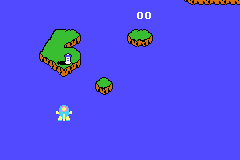

Famicom Mini 19 - Twin Bee (Japan)
EEPROM 64K Save Format Spec gbakit Built-In 💾 MultiBoot 🎮 4P Link 📡 Wireless
Cartridge Identity
- Game Code
FTWJ(FamilyFTW)- Header Title
TWINBEE- Maker / Revision
01/ rev0- ROM Size
- 1.0 MiB (1,048,576 B)
- Save Media
EEPROM 64K- SHA-256
ad87847573efc8f3f8253ae9c38df335b7a6687f136b12129f552d91c35308df
Screenshots


Niche & Rare Accessories
Detected niche/rare GBA accessory support: 🔌 Wireless Adapter (RFU_V1023).
Full 343-ROM corpus breakdown in the Cartridge Hardware & Niche Accessories Reference · auto-detected from ROM bytes via
gbakit inspect.
- Wireless Adapter (RFU_V1023)
- Nintendo Wireless Adapter (
AGB-015) SDKRFU_V1023+RFU-MBOOT
Link Cable & Multiplayer Communications
This title contains detected communication capabilities: 💾 MultiBoot 🎮 4P Link 📡 Wireless.
Detailed protocol specifications, SIO registers, Joybus commands, and MultiBoot sequences are documented in the Link & Multiplayer Reference.
- Multi-Player SIO (4P)
- 16-bit ring network · SIOCNT (
0x04000128) literals:0x0057d8,0x005b44,0x005c9c· SIODATA32/SIOMULTI0 (0x04000120) literals:0x000ea4,0x005ae8,0x005dc4 - Nintendo Wireless Adapter
- AGB-015 RFU driver signature
RFU-MBOOTat offset0x006314 - Nintendo Wireless Adapter
- AGB-015 RFU driver signature
RFU-MBOOTat offset0x024dbc - Nintendo Wireless Adapter
- AGB-015 RFU driver signature
RFU-MBOOTat offset0x02927c - Nintendo Wireless Adapter
- AGB-015 RFU driver signature
NINTENDOSio32IDat offset0x006320 - Nintendo Wireless Adapter
- AGB-015 RFU driver signature
NINTENDOSio32IDat offset0x029288 - Single-Cart MultiBoot
- Single-Cartridge MultiBoot (Download Play) client/server handler · Thumb SWI 0x25 (
0xDF25):0x00090a,0x06d1ae,0x06fc8a,0x07b404· SDK signatures:MBOOTat0x006318
Battery Save Format Specification
Open Full Save Format SpecDownload save-format.json
- Specification Coverage
- 4 mapped fields · 0 verified checksum(s) · Confidence: HIGH
- gbakit Built-In Support
- Built-in (FTWJ)
gbakit save verify FTWJ save.sav
gbakit save decode FTWJ save.sav
gbakit save fix FTWJ damaged.sav -o repaired.savObserved Battery Save Layout
- Fill Byte & Active Size
0x00fill · 512–512 / 8,192 B active (entropy 0.16 bits/B)- Active Offset Ranges
0x0–0x1FF(1 total)- ASCII Magic / Headers
EBNI- Observed Variable Regions
- 0 bytes across 0 spans: None
- Candidate Checksum/Counter Spans
- None
Text, Fonts & Scene Data
- Primary Text Encoding
- Compressed / custom-encoded text
- Font & VWF Indicators
- No VWF Table No 1bpp Font · BIOS SWIs: BitUnPack
0x10:12· LZ770x11/12:22· Huffman0x13:5· RLE0x14/15:14 - Scene & Packaging
0ROM pointer tables (≥32 entries,0≥200) ·0relativeu32TOCs ·60OAM metasprite hits